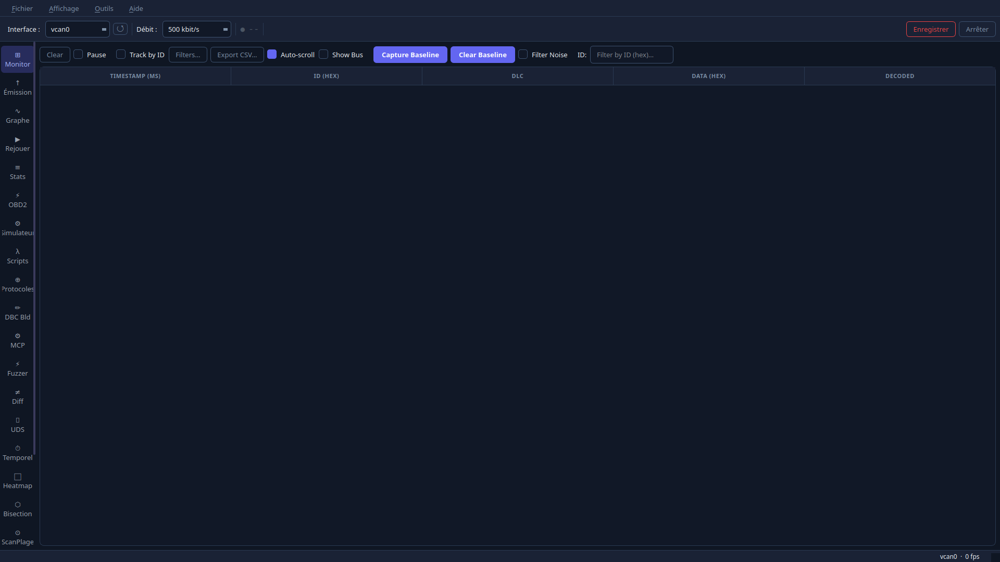

Live frame monitor, DBC signal decoding, Lua scripting, protocol decoders and Claude MCP integration — 100% local, no telemetry, no cloud.

No account, no server, no subscription. Everything runs on your machine.
Real-time scrolling table with 2000-row buffer. Search by ID, pause, clear. Hardware timestamps via io_uring.
Load a .dbc file and decoded signal values appear inline in the frame table. Full round-trip lossless parser — VERSION, BU_, BO_, SG_, VAL_, CM_.
Up to 8 live traces on a rolling 10-second QChart window. Watch voltages, temperatures and speeds in real time.
Send standard, extended or FD frames (DLC 0–15, 64 bytes) with input validation. Perfect for testing ECU responses.
Scans /sys/class/net for all ARPHRD_CAN interfaces. Hot-swap adapters without restarting the app.
Live in-app tab decoding CANopen NMT/SDO/PDO/EMCY, J1939, ISO-TP, UDS, OBD-II and NMEA 2000 as frames arrive.
In-app editor with Run/Stop and live output console. Sandboxed Lua engine with watchdog. CAN, SDO and log APIs built in.
Generate realistic CAN traffic without hardware. Built-in vehicle profiles or create custom profiles from the UI — signals, periods and DLC all configurable.
JSON-RPC 2.0 server (stdio or TCP on 127.0.0.1) exposing 11 tools to Claude Desktop and Claude Code. Ask Claude to decode frames, send commands, or run scripts.
High-throughput frame capture pipeline with hardware timestamps and a lock-free SPSC ring buffer — no frames dropped at high bus loads.
Inject random, incremental or bit-flip CAN frames at a configurable interval from the Fuzzer tab. Per-run frame counter tracks how many frames were sent.
ISO 14229 + ISO 15765-2 transport layer built in. Read DTC (0x19), Clear DTC (0x14), Read ECU Info via 0x22 — VIN, serial number and active session. Live session indicator.
File → "Export BLF..." produces a Vector CANalyzer-compatible BLF v2 file. "Export MDF4..." produces an asammdf / MATLAB-compatible MDF4 v4.10 file.
Compare two CAN captures (.log or .csv) in the Diff tab. Results grouped by ID: A only, B only, Changed, Same. Byte-level delta and ID filter included.
Tools → "+ Add Second Bus..." opens a second SocketCAN interface alongside the first. A "Bus" column in the Monitor lets you tell frame sources apart at a glance.
Icon sidebar replaces the old 22-tab scroll bar. Drag any panel — or right-click → Detach — to float it as an independent window. The Redock button snaps it back instantly.
Auto-classify every live CAN ID by update rate (slow / medium / fast) and signal type (digital / analog / constant / counter) using pure heuristics. Wiggle test: capture baseline, perform a physical action, then rank the top 30 changed signals by score.
Full ISO-TP server + UDS responder (services 0x10 / 0x11 / 0x14 / 0x19 / 0x22 / 0x27 / 0x28 / 0x2E / 0x31 / 0x3E), SecurityAccess seed/key, configurable DIDs and DTCs. Test your UDS client without real hardware.
Ctrl+C or right-click on any table to copy a single cell, the selected rows, or the full table as TSV — paste straight into Excel or a terminal.
Full Qt i18n via .ts files. Switch between French and English from the settings menu — your choice persists across sessions.
Self-contained AppImage — Qt6 fully bundled. Runs on any x86_64 Linux with SocketCAN support. No installation, no root required.
If the Linux kernel knows about it, SocketSpy will detect it automatically.
gs_usb driver
gs_usb driver
peak_usb driver
kvaser_usb driver
ixxat_usb2can driver
No hardware needed — test locally